# 스타트업을 위한 <br>웹앱 UI/UX 디자인 <div id="copyright"></div>
# 강사 소개
## 박영웅 (주)투비컴원 디자인팀 빈스토크 디자인팀 디자인나스(강남) 웹 디자인/개발 전임 강사 질링스 프론트엔드 개발 리더
# 스타트업의 고민
## 현실적인 디자인이 필요 ### 시간, 비용이 충분한가?
## 내실이 중요하다 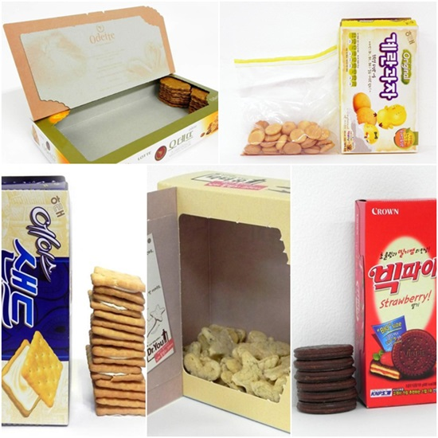
## 디자인은 애물단지 > 가지고 있기에는 짐이고 버리기에는 아까운 물건 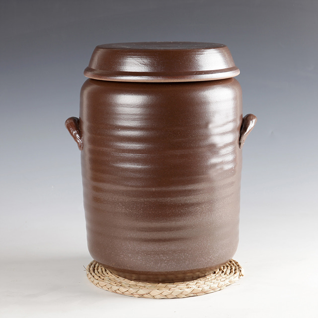
## 디자이너 연봉 2400만원 기준 월급 200만원(세전) > 매월 디자인에 200만원씩 지출할 가치가 있는 시점인가
## 디자이너 없이 디자인을 하려면..
## UI Frameworks
## Twitter Bootstrap <a href="https://getbootstrap.com/" target="_blank"> <img src="img/bootstrap.jpg" alt="Twitter Bootstrap" width="150"> </a>
## Materialize <a href="https://materializecss.com/" target="_blank"> <img src="img/materialize.png" alt="Materialize" width="150"> </a>
## Semantic UI <a href="https://semantic-ui.com/" target="_blank"> <img src="img/semanticui.png" alt="Semantic UI" width="120"> </a>
## Material Design? <a href="https://material.io/" target="_blank"> </a>
## UI 개발자? > 결국 디자인은 개발자가 현실화한다.
## Wix 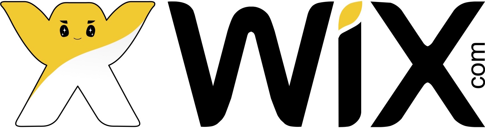 <div class="video-container"> <div class="wrap"> <iframe width="100%" src="https://www.youtube.com/embed/Dzu_bpCcfuA?rel=0&showinfo=0" frameborder="0" allowfullscreen></iframe> </div> </div>
## Canva 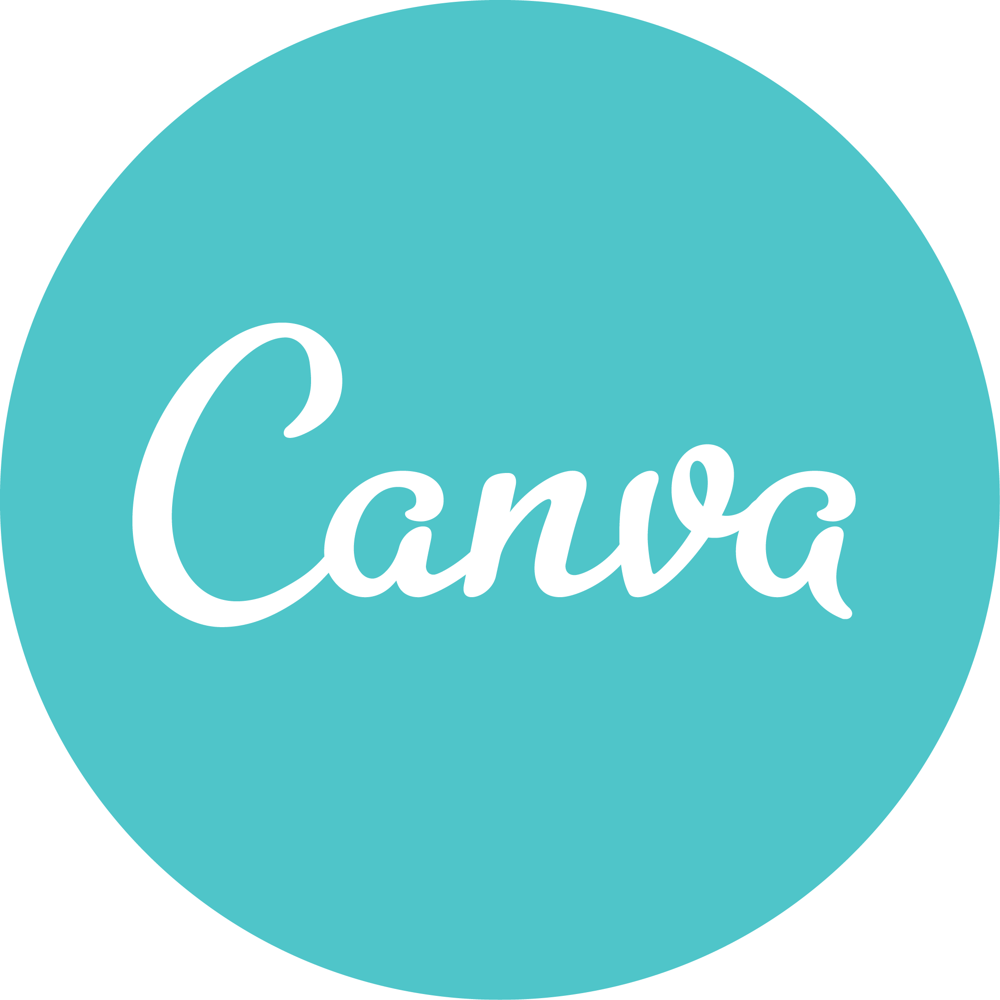 <div class="video-container"> <div class="wrap"> <iframe width="100%" src="https://www.youtube.com/embed/FrgcaRaOhEw?rel=0&showinfo=0" frameborder="0" allowfullscreen></iframe> </div> </div>
## SixShop <div class="video-container"> <div class="wrap"> <iframe width="100%" src="https://www.youtube.com/embed/TWly4FhmF_0?rel=0&showinfo=0" frameborder="0" allowfullscreen></iframe> </div> </div>
## Creatorlink 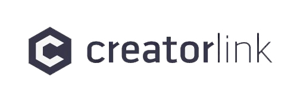 <div class="video-container"> <div class="wrap"> <iframe width="100%" src="https://www.youtube.com/embed/kVbmnLY8xLI?rel=0&showinfo=0" frameborder="0" allowfullscreen></iframe> </div> </div>
## 경청하기 > 책임자의 취향이 반영되는 경우가 대부분이기 때문에 객관성 있게 평가할 사람을 찾아서 경청하라
## 카피하기 > 이미 성공한(검증된) 제품의 유사 제품의 UI/UX를 카피하라
## 핀터레스트(Pinterest) <a href="https://www.pinterest.co.kr/" target="_blank"> <img src="img/pinterest_logo.png" alt="Google Material Design" width="140"> </a> > 모방은 창조의 어머니다!
# 좋은 디자인은 독이다?
## 기대심리와 실망심리 현실적인 측면들에 더 집중! > 멋진 디자인과 제품의 기대감은 정비례하기 때문에, 곧 제품의 실망감으로 이어지기 쉽다.
## 제품 개발이 중요 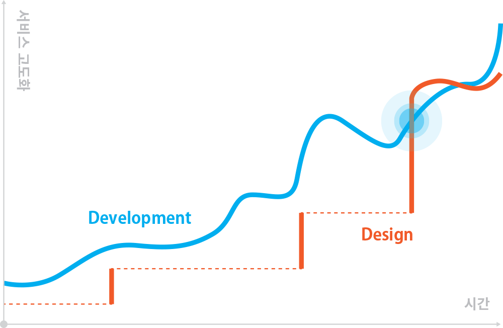 > 제품이나 서비스가 안정화되면 디자인이 중요해지는 시점이 온다. 그때가 구인 타이밍!
# 고민이 무엇인가요?
# UI/UX 정의
## UI 디자인이란? User Interface Design 제품 사용자가 직접 접하는 레이아웃이나 기능 등을 구성하는 것 색상, 위치, 크기, 구도, 순서, 객관적
## UX 디자인이란? User Experience Design 제품 사용자가 가지고 있는 경험을 토대로 UI를 구성하는 것 느낌, 태도, 행동, 패턴, 주관적
## UX 디자인이란? 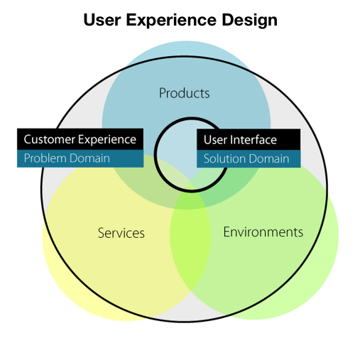
## Static UI (1) 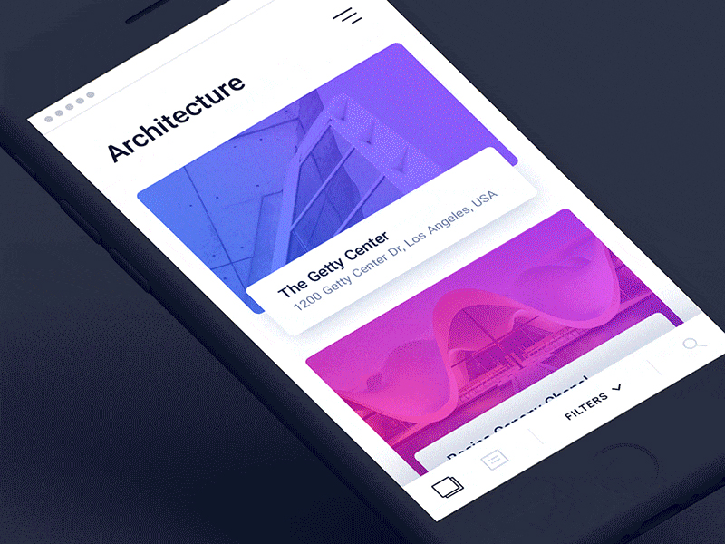
## Static UI (2) 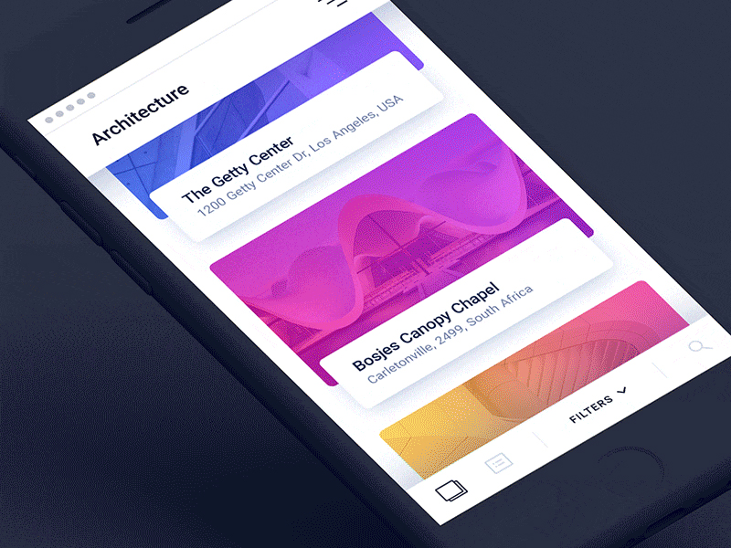
## Static UI (3) 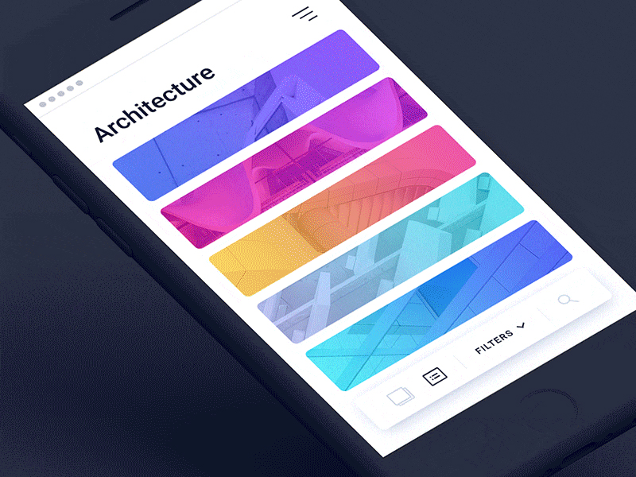
## Interaction UI <img src="img/interaction_ui.gif" alt="Interaction UI" width="500" style="border-radius: 6px;">
## 프로토타입!
# 좋은 UI/UX 만들기
## 관례를 따르기 - 로그인 버튼은 어디에 있나요? - 연락처는 어디에 있나요? > 최소한의 학습 비용으로 제품을 사용할 수 있도록 일반적 관례에 따라 만드는 것이 좋습니다.
## 카피하기 - 유명한/성공한 유사 제품의 UI/UX를 카피 - 사용자 평가 및 검증 단계 비용을 획기적으로 줄여줌 > 이미 만들어진 사용자 경험을 이용할 수 있기 때문에 최소 비용으로 최대 효과를 가질 수 있습니다.
## 기능에 따른 스타일 구분하기 - 클릭 요소와 텍스트 요소를 비슷한 스타일로 디자인하지 말 것 - 스타일만으로도 기능을 이해할 수 있도록 디자인 > 사용자가 제품을 사용(학습)하면서 기능에 대해 헷갈릴 수 있는 부분을 최소한으로 줄이세요.
## 최소 조건 충족 - 사용자는 최소 조건만 충족하면 만족 - 최선의 조건을 제공하기 위해서 시간과 비용을 낭비하지 말 것 - 페이지의 핵심만 산만하지 않게 제공
## 구역(섹션) 나누기 - 페이지의 콘텐츠 구역(섹션)을 색, 여백, 선 등으로 정확하게 구분 > 사용자가 필요한 콘텐츠와 필요하지 않은 콘텐츠를 쉽게 구분할 수 있습니다.
## 설명 넣기 - 각 부분에 대한 간략한 설명을 필히 첨부 - 설명은 숨김 처리 > 사용자가 당연히 이해할 것으로 생각하면 안됩니다. '사용자는 멍청하다!'
## 동적 UI(Interaction UI)는 나중에 - 제품의 사용 시간이 누적되어 디자인으로 사용자를 환기시킬 때 적용 - 초기 개발 비용 증가의 원인 > 좋은 경험을 위한 디자인의 고도화는 제품(서비스)의 안정화 이후에 진행하세요.
## 히트맵(HeatMaps) 분석 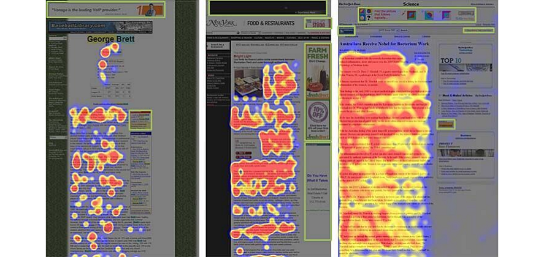 > 히트맵은 클릭, 탭, 스크롤 동작 등을 시각적으로 표현하여 사용자가 사이트에서 원하는 것을 이해하고 상호 작용할 수 있도록 도움을 줍니다.
## Hotjar <a href="https://www.hotjar.com/" target="_blank"> </a>
# 섹션(Section) 이해하기
## 섹션(Section) 이란? 웹 사이트를 구성하는 가장 큰 단위의 연결된 레이아웃들(Layouts) `header`, `footer`, `section`, `article`...
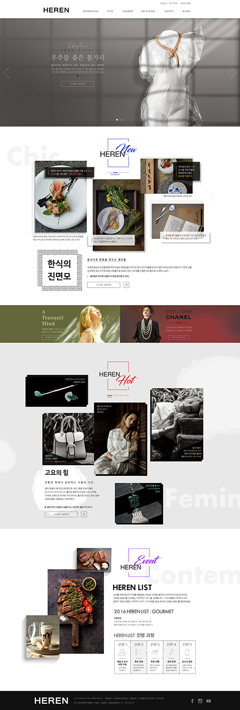
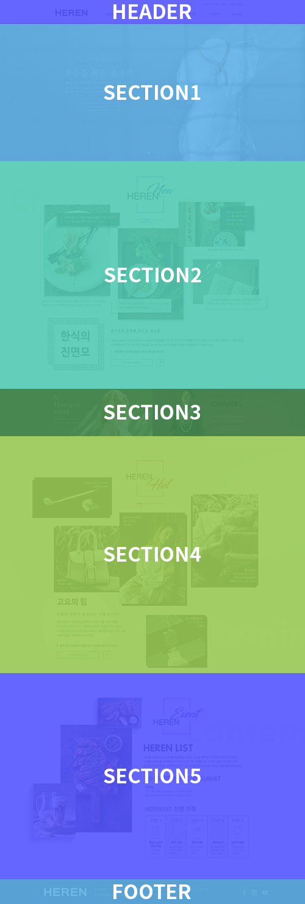
## 섹션으로 구성하는 이유 웹의 콘텐츠(Contents)를 구분하여 관리하기 위해서 섹션으로 구성. - 웹의 내용 구분 - 각 레이아웃의 기준 - 관리가 편리
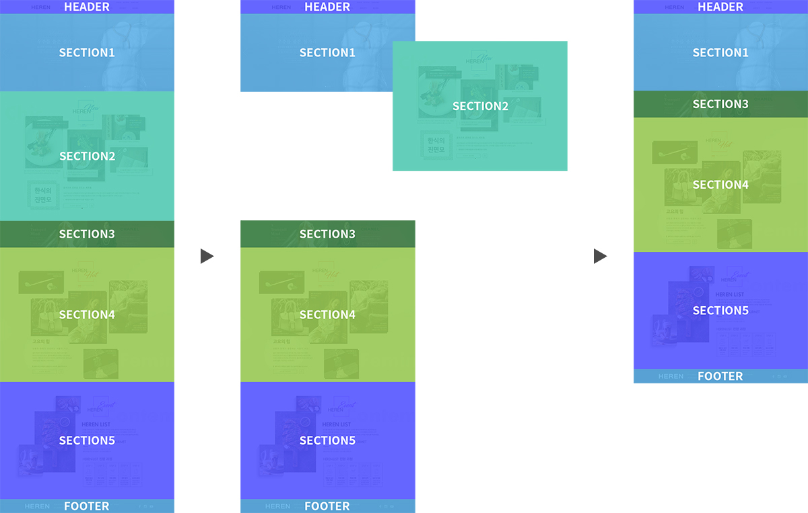
# 프로토타입?
## 클라이언트는 결과물을 본 후에야<br> 자신이 무엇을 원했었는지 안다 ``` 최종.psd 최종(1).psd 진짜최종.psd 최종(2).psd 마지막.psd 정말_마지막.psd 정정정정정말_마지막.psd 최종_170623.psd ```
## 디자이너가 사용하는 프로토타입 프로세스 - 와이어프레임 레이아웃(기획) - 비주얼 목업(정적 시안) - 인터렉션 프로토타입(동적 시안) - VCS(Version Control System) > 개발 전 디자이너가 실물과 최대한 비슷한 디자인 샘플을 만들어 체크하는 것을<br>'프로토타입'이라고 한다.
## Adobe XD 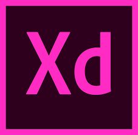 <div class="video-container"> <div class="wrap"> <iframe width="100%" src="https://www.youtube.com/embed/KR-AE-yznY4?rel=0&showinfo=0" frameborder="0" allowfullscreen></iframe> </div> </div>
## Sketch 3 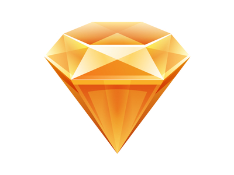 <div class="video-container"> <div class="wrap"> <iframe width="100%" src="https://www.youtube.com/embed/YdIeiCyKwpI?rel=0&showinfo=0" frameborder="0" allowfullscreen></iframe> </div> </div>
## InVision 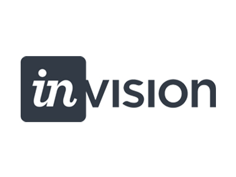 <div class="video-container"> <div class="wrap"> <iframe width="100%" src="https://www.youtube.com/embed/1H7Ql9hmbuM?rel=0&showinfo=0" frameborder="0" allowfullscreen></iframe> </div> </div>
## Framer 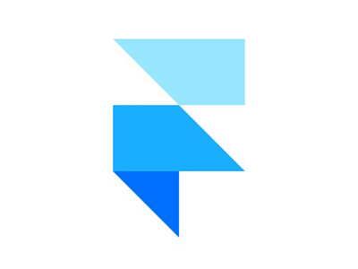 <div class="video-container"> <div class="wrap"> <iframe width="100%" src="https://www.youtube.com/embed/cvxtlt4p2QY?rel=0&showinfo=0" frameborder="0" allowfullscreen></iframe> </div> </div>
## Zeplin <img src="img/zeplin_logo.png" alt="Framer" width="100"> <div class="video-container"> <div class="wrap"> <iframe width="100%" src="https://www.youtube.com/embed/PI-0v40gc_8?rel=0&showinfo=0" frameborder="0" allowfullscreen></iframe> </div> </div>
## Adobe XD? <a href="https://www.adobe.com/kr/products/xd.html" target="_blank"> </a> > 어도비 XD는 어도비 시스템즈가 개발, 배급한 사용자 체험 디자인 소프트웨어이다. 벡터 디자인 및 와이어프레임, 그리고 클릭을 통한 단순한 상호작용 프로토타입 제작을 지원한다. / 위키백과
# 비트맵과 백터
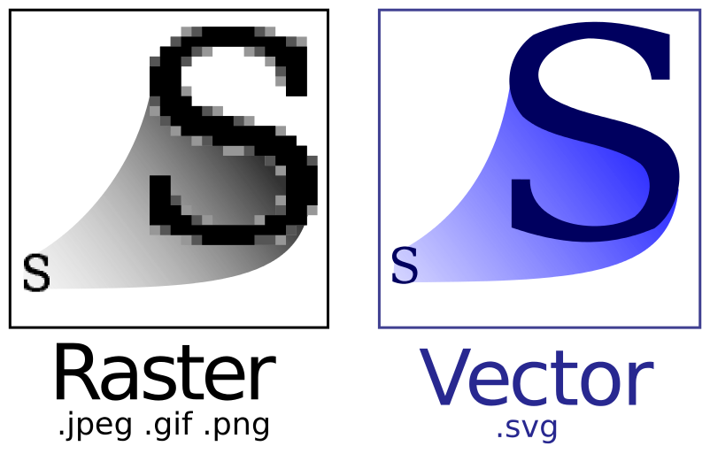
## jpg(jpeg) 압축률(손실 압축)이 훌륭하여 사진이나 예술분야에서 많이 사용 표현 색상(24비트, 약 1600만)이 뛰어나 고해상도 표시장치에 적합 이미지의 품질과 용량을 쉽게 조절 가능
## png GIF의 대체 포맷으로 개발(비손실 압축) 8비트(256), 24비트(약 1600만) 컬러 이미지 처리와 완벽한 Alpha Channel(투명도) 지원 권장 포맷
## gif 이미지 파일 내에 이미지 및 문자열 같은 정보들을 동시 저장 가능 여러 장의 이미지를 하나의 파일 내에 담을 수 있음(움짤) 8비트 컬러만 지원 가능
## svg 2차원 벡터 그래픽을 표현하기 위한 XML 기반의 파일 형식 이미지 스케일에 자유로움 어도비 일러스트레이터와 같은 벡터 드로잉 프로그램을 사용하여 편집 가능
# 이미지 소스 관리
## 24비트(bits) 컬러 이미지(`JPG` / `PNG-24`)로<br> 저장하세요 | | 8 bits | 24 bits | |--|---|---| | 색상 수 | 256 | 16,777,216 | > `GIF`는 8비트 컬러만 지원하지만 '반복 이미지(움짤)'를 위해서 사용됩니다.
## `JPG`는 반복 저장하지 마세요 '손실 압축' 방식을 사용하기 때문에 반복적으로(쓸데없이) 저장하면,<br> 이미지 품질이 심각하게 손상될 수 있습니다.
## `PNG-24`로 저장하세요 포토샵은 `PNG-8`에서 투명도 지원에 문제가 있습니다.
## Save file names in English. Languages other than English can cause problems with 'Encoding'. ``` 로고.jpg (X) 애니메이션2.gif (X) logo.jpg (O) animation2.gif (O) ```
## 영어 소문자만 사용 보통의 개발 언어는 대문자와 소문자를 구분합니다. ``` Logo.png (X) SNS.png (X) logo.png (O) sns1.png (O) ```
## 숫자로 시작 금지 파일명이 숫자로 시작하면 '문자'로 해석이 되지 않습니다. ``` 1sns_btn.png (X) sns_btn1.png (O) ```
## 띄어쓰기 금지 띄어쓰기가 들어가면 여러 파일로 인식될 수 있습니다. ``` sns btn.jpg (X) close btn.png (X) sns_btn.jpg (O) close-btn.png (O) ```
## 공통 이름으로 만드세요 특정 부분에서 사용되는 파일들은 공통된 이름으로 관리하세요. ``` facebook.png (X) twitter.png (X) blog.png (X) sns_facebook.png (O) sns_twitter.png (O) sns_blog.png (O) ```
# 네이티브, 하이브리드, 웹앱
## 네이티브 앱 - 네이티브 API를 사용하기 때문에 네이티브 성능을 온전히 사용 가능 - iOS(Objective-C, Swift), Android(Java, Kotlin)에 익숙한 사용자라면 쉽게 접근 가능 - iOS, Android, Web 등 세분화된 개발 기술들이 필요 - 플랫폼이 한정적이기 때문에 개발 비용이 높음 > 성능 위주의 앱(게임)에 적합
## 하이브리드 앱 - 웹 개발 기술(HTML5, CSS3, JavaScript(ES))로 네이티브 기능(카메라, 가속도계, 위치정보, 연락처)을 사용하는 앱을 개발 가능 - 개발 플랫폼의 제한이 적기 때문에 개발 비용이 낮음 - 네이티브와 앱웹이 섞여 있기 때문에 성능 퍼포먼스가 높지 않음 > 기본적인 네이티브 기능만을 사용하며 다양한 플랫폼 지원을 원하는 경우에 적합
## 웹앱 - 개발 플랫폼의 제한이 없기 때문에 개발 비용이 가장 낮음 - 사용 브라우저 API만 사용 가능하기 때문에 네이티브 기능이 매우 제한 - 네이티브 기능을 기반으로 하는(터치, 카메라 등) 앱 제작이 불가 > 네이티브 기능이 필요하지 않으며 웹 기능 위주(I/O)일 경우에 적합
# 고정형, 반응형, 적응형(모바일) 웹앱
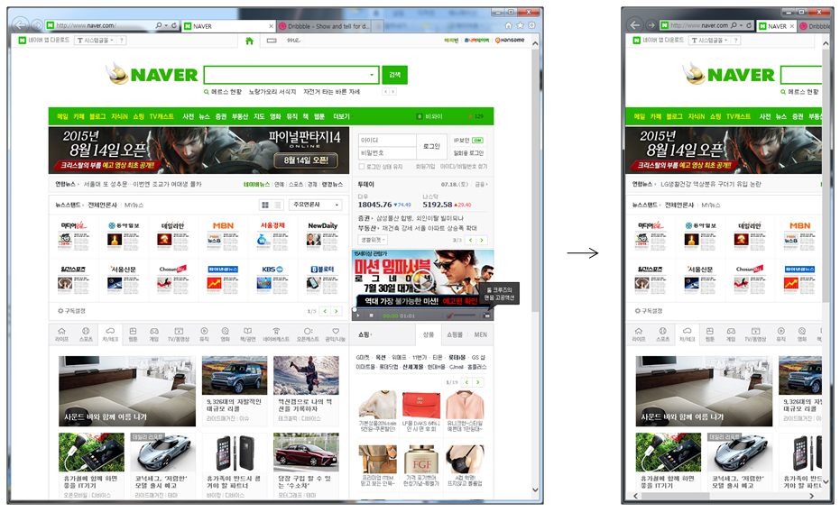
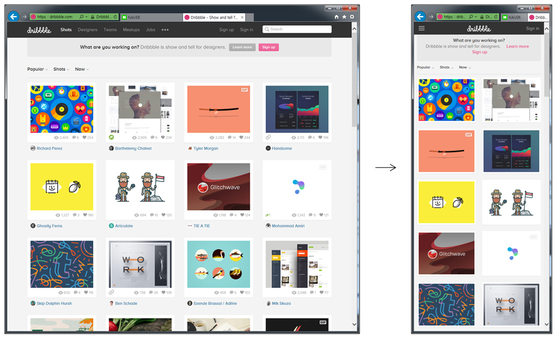
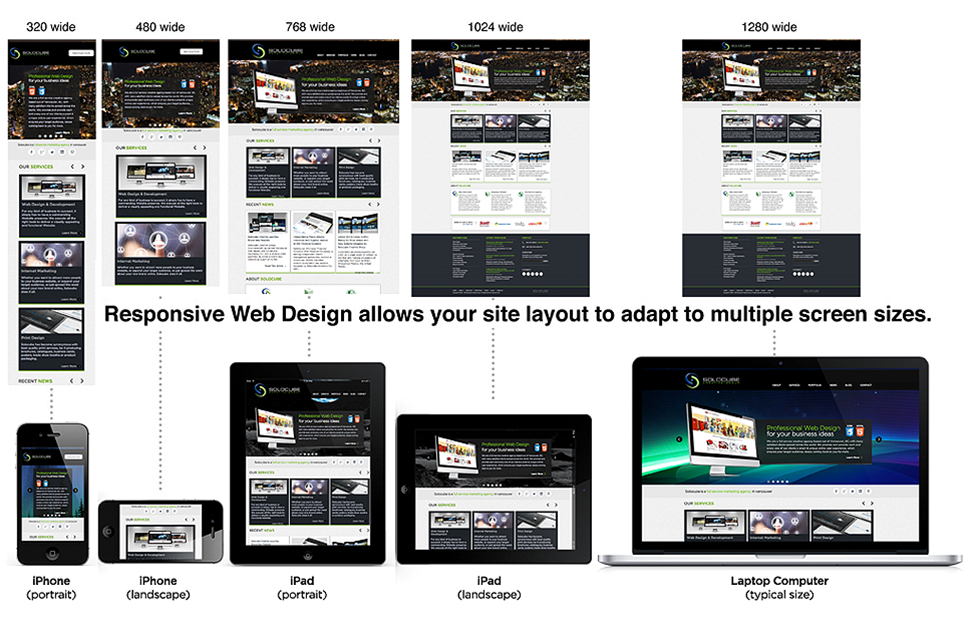
# 좋은 디자이너 구인하기
## 연봉 회사의 제품과 같이 성장할 디자이너를 찾는다면 2600만원 이상 단순 반복 작업 위주나 중간 수준의 퀄리티가 충분하다면 2400만원 이하
## 포트폴리오 포트폴리오는 꼭! 전공자가 컨펌
## 면접 - 디자인에 대한 철학이 있는가 - 성장하길 원하는가 - 어떤 디자인 스타일에 강하고 약한지 스스로 알고 있는가 - 디자인 상식은 풍부한가 - 포트폴리오에 대해서 설명할 수 있는가 - 전후 프로세스(기획, 개발)에 대한 자세는 어떤가 - 소통을 잘할 수 있는가
# 디자이너와 협업하기
## 컨셉이 중요해 > 아직도 컨셉 잡고 있으면 어떻게 해?! - 디자인은 컨셉(Concept)이 반! - 컨셉이 잡히면 UI 디자인 진도는 일사천리! - 컨셉 없이 디자인하는 것은 도면 없이 집을 짖는 것과 같음 - 일정 안에선 믿고 기다리기
## 정확한 요구사항 전달 > 원하시는게 뭔지 모르겠어요.. - 디자이너들에게 가장 특화된 신체 기관은 눈! - 기획 단계에서 참고했던 자료들을(특히 이미지) 최대한 많이 전달
## 기획의 연장선 > 참고 자료는 없나요? - 디자인 단계는 최소한의 기회비용으로 기획적 오류를 수정할 좋은 기회 - 기획 단계를 잘 정리하고 꼭 브리핑할 것 - 질문 많은 디자이너는 일 잘하는 디자이너 - 기획자 본인을 위해서라도 친절하게 잘 답변해야 함
## 핵심 콘텐츠 > 시간과 디자인 퀄리티는 정비례~ - 중요한 콘텐츠와 덜 중요한 콘텐츠를 분리해서 브리핑 - 디자이너가 시간 분배를 잘하는 만큼 퀄리티가 보장됨
## 젠틀맨 > 도대체 아는 게 뭐야? - 개발 상식조차 디자인 교육과정에 포함되지 않음 - 기획자나 개발자가 디자인에 대해서 잘 모르는 것과 동일 - 문의 사항이 있다면 조금만 쉽고 친절하게 설명
# 좋은 디자이너가 없을 때
## 주변에서 찾으세요 - 커뮤니케이션이 원활한 디자이너를 주변에서 찾기 - 저렴한 가격과 이해도 높은 퀄리티는 덤
## 프리랜서 - 비교적 낮은 가격으로 디자인 가능 - 포트폴리오가 풍부한 프리랜서를 선택 - 완성된 결과물에 대한 계약사항이 필수! - 주기적인 진행 상황 보고 받기!
## 직접하세요 - 퀄리티가 크게 중요하지 않을 때 - 유사 제품을 카피하기 - 똑같이 만들려고 해도 똑같지 않을 것
## 디자인 외주 업체 - 비용이 여유가 있고 퀄리티가 중요할 경우 - 여러 업체의 단가 비교가 필수!
# 좋은 디자이너의 자세
## 디자인은 예술이 아니다 - "왜?" 라고 스스로에게 물어보기 - 미적이면서 기능적이어야 한다! - 객관적, 논리적으로 설명할 수 없다면 좋은 디자인이 아님 > 그냥 예뻐서 넣었어요~ 이힛♡
## 정품(저작권) 요구하기 - 자신과 회사를 위해서 핵심 도구들은 꼭 정품을 이용! - 무엇이 왜 필요한지 논리적으로 설명하고 이해시킬 수 있어야 함 > 저작권으로 회사 문 닫을 수 있습니다!
## 이미지 - 저작권이 있는 이미지는 무조건 피하기 - 애매하더라도 제품 메인에서 사용한다면 필히 구입 - 상업적 무료 이미지 사이트 이용
## 폰트 - 폰트 패키지 구매 비용은 100만원 전후 - 무조건 상업적 무료 폰트 사용하기(네이버 나눔, 구글 Noto, 배민 등) - 단, 같은 디자인도 폰트에 따라 심한 퀄리티 차이가 있을 수 있음 > 무료 폰트 사용 꿀팁!
## 도구(Tools) - 디자인은 도구 종속성이 큼 - 포토샵, 일러스트, Sketch 3 등 필수 도구는 그냥 구입! - 유료 도구 지원 의사가 없는 회사는 쳐다보지도 말 것! > Adobe XD 무료 / May,2018